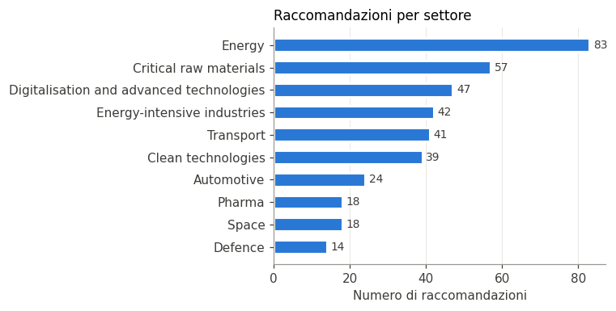
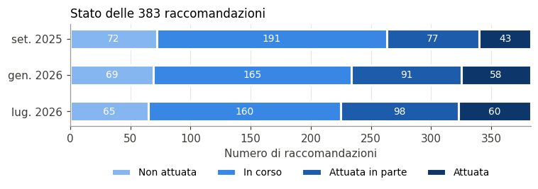
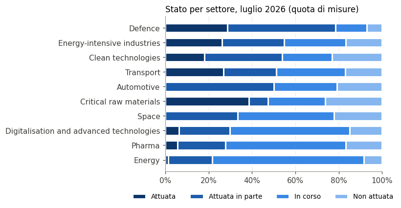

Excel: 383 righe, 13 colonneLe 383 raccomandazioni del rapporto Draghi: analisi esplorativa
Europa
Competitività
Politica economica
Le 383 raccomandazioni del rapporto Draghi e il loro stato di attuazione nelle tre rilevazioni del Draghi Observatory & Implementation Index (EPIC e KEFIM).
Paolo Volterra ![]()
Il rapporto Draghi sulla competitività europea (settembre 2024) contiene, nella parte B, 383 raccomandazioni settoriali. Il Draghi Observatory & Implementation Index (EPIC e KEFIM, draghiwatch.eu) ne valuta lo stato di attuazione in tre rilevazioni: settembre 2025, gennaio 2026 e luglio 2026.
Questo notebook esplora il file OUT/draghi_383_raccomandazioni_20261009.xlsx e lo confronta con i dati letti in diretta da draghiwatch.eu.
1. Dati e controllo sulla fonte
Il file Excel è una traduzione in italiano delle intestazioni dei dati del «Proposal Explorer» di draghiwatch.eu. Prima dell’analisi gli stati delle 383 misure vengono confrontati con quelli pubblicati oggi sul sito.
| Verifica | Valore |
|---|---|
| Misure sul sito | 383 |
| Misure solo nell’Excel o solo sul sito | 0 |
| Stati diversi, set. 2025 | 0 |
| Stati diversi, gen. 2026 | 0 |
| Stati diversi, lug. 2026 | 0 |
In parole semplici: il sito draghiwatch.eu pubblica oggi 383 misure; l’Excel coincide con il sito misura per misura in tutte e tre le rilevazioni.
2. Struttura del file
Colonne, valori mancanti ed esempi di valori.
| Colonna | Valori presenti | Valori diversi | Esempio |
|---|---|---|---|
| N. | 383 | 383 | 1 |
| Settore | 383 | 10 | Energy |
| Sottosettore | 187 | 10 | NATURAL GAS PROPOSALS |
| DG | 383 | 15 | DG ENER |
| Policy (obiettivo) | 383 | 128 | Establish partnerships with reliable and diversified trade p |
| Misura raccomandata | 383 | 348 | Develop a comprehensive strategy at the EU level, coordinate |
| Stato set 2025 | 383 | 4 | In Progress |
| Stato gen 2026 | 383 | 4 | In Progress |
| Stato lug 2026 | 383 | 4 | Partially Implemented |
| Importanza | 383 | 49 | 8.75 |
| Orizzonte | 383 | 7 | ST |
| Motivazione EPIC | 14 | 14 | This policy is In Progress, as the European Defence Industri |
| Evidenze EPIC | 14 | 14 | European Commission proposals for EDIS/EDIP (March 2024); Co |
In parole semplici: il file ha 383 raccomandazioni e 13 colonne; «Sottosettore» è compilata solo per 187 misure; «Motivazione EPIC» è compilata solo per 14 misure; «Evidenze EPIC» è compilata solo per 14 misure. Le altre colonne sono complete.
3. Settori
Le raccomandazioni seguono i dieci capitoli settoriali della parte B del rapporto.
| Settore | Misure | Quota |
|---|---|---|
| Energy | 83 | 21,7% |
| Critical raw materials | 57 | 14,9% |
| Digitalisation and advanced technologies | 47 | 12,3% |
| Energy-intensive industries | 42 | 11,0% |
| Transport | 41 | 10,7% |
| Clean technologies | 39 | 10,2% |
| Automotive | 24 | 6,3% |
| Space | 18 | 4,7% |
| Pharma | 18 | 4,7% |
| Defence | 14 | 3,7% |

In parole semplici: quasi metà delle raccomandazioni riguarda tre settori: Energy, Critical raw materials, Digitalisation and advanced technologies (187 su 383, 48,8%). Il settore con meno misure è Defence (14).
4. Stato di attuazione nelle tre rilevazioni
EPIC classifica ogni misura in quattro stati: non attuata, in corso, attuata in parte, attuata.
| Stato | set. 2025 | gen. 2026 | lug. 2026 |
|---|---|---|---|
| Non attuata | 72 | 69 | 65 |
| In corso | 191 | 165 | 160 |
| Attuata in parte | 77 | 91 | 98 |
| Attuata | 43 | 58 | 60 |

In parole semplici: le misure attuate per intero salgono da 43 a 60 su 383 (15,7% a luglio 2026); con quelle attuate in parte si arriva a 158 (41,3%). Le non attuate scendono da 72 a 65.
5. Come cambiano le singole misure
Confronto misura per misura fra la prima rilevazione (settembre 2025) e l’ultima (luglio 2026).
| set. 2025 ↓ / lug. 2026 → | Non attuata | In corso | Attuata in parte | Attuata |
|---|---|---|---|---|
| Non attuata | 65 | 4 | 2 | 1 |
| In corso | 0 | 156 | 27 | 8 |
| Attuata in parte | 0 | 0 | 69 | 8 |
| Attuata | 0 | 0 | 0 | 43 |
| Movimento | Misure |
|---|---|
| Avanzate | 50 |
| Ferme | 333 |
| Arretrate | 0 |
In parole semplici: in dieci mesi 50 misure avanzano di almeno uno stato, 333 restano ferme e 0 arretrano. La diagonale della tabella sono le misure ferme; sopra la diagonale quelle avanzate.
| Settore | Misure avanzate | Su |
|---|---|---|
| Clean technologies | 11 | 39 |
| Defence | 10 | 14 |
| Energy-intensive industries | 9 | 42 |
| Energy | 5 | 83 |
| Critical raw materials | 4 | 57 |
| Automotive | 4 | 24 |
| Transport | 3 | 41 |
| Digitalisation and advanced technologies | 2 | 47 |
| Space | 1 | 18 |
| Pharma | 1 | 18 |
In parole semplici: nessuna misura arretra fra settembre 2025 e luglio 2026 (0 casi): nei dati EPIC lo stato sale o resta fermo. Le 50 misure avanzate si distribuiscono fra i settori come in tabella.
6. Settori e stato di attuazione a luglio 2026
| Settore | Non attuata | In corso | Attuata in parte | Attuata | Totale | Almeno in parte | Quota almeno in parte |
|---|---|---|---|---|---|---|---|
| Defence | 1 | 2 | 7 | 4 | 14 | 11 | 78,6% |
| Energy-intensive industries | 7 | 12 | 12 | 11 | 42 | 23 | 54,8% |
| Clean technologies | 9 | 9 | 14 | 7 | 39 | 21 | 53,8% |
| Transport | 7 | 13 | 10 | 11 | 41 | 21 | 51,2% |
| Automotive | 5 | 7 | 12 | 0 | 24 | 12 | 50,0% |
| Critical raw materials | 15 | 15 | 5 | 22 | 57 | 27 | 47,4% |
| Space | 4 | 8 | 6 | 0 | 18 | 6 | 33,3% |
| Digitalisation and advanced technologies | 7 | 26 | 11 | 3 | 47 | 14 | 29,8% |
| Pharma | 3 | 10 | 4 | 1 | 18 | 5 | 27,8% |
| Energy | 7 | 58 | 17 | 1 | 83 | 18 | 21,7% |

In parole semplici: il settore più avanti è Defence, con 78,6% delle misure attuate almeno in parte; il più indietro è Energy, con 21,7%. Il digitale (47 misure) è al 29,8%.
7. Importanza e orizzonte temporale
EPIC assegna a ogni misura un punteggio di importanza (da 1 a 10, a volte una media con decimali) e un orizzonte (breve, medio, lungo termine).
| Classe importanza | Non attuata | In corso | Attuata in parte | Attuata | Totale | Quota almeno in parte |
|---|---|---|---|---|---|---|
| fino a 7 | 15 | 17 | 9 | 6 | 47 | 31,9% |
| 7-8 | 25 | 65 | 33 | 12 | 135 | 33,3% |
| 8-9 | 21 | 61 | 44 | 30 | 156 | 47,4% |
| 9-10 | 4 | 17 | 12 | 12 | 45 | 53,3% |
In parole semplici: l’importanza mediana è 8,2; per stato a luglio 2026 è 8,0 (non attuata), 8,0 (in corso), 8,6 (attuata in parte), 9,0 (attuata). Le misure con importanza più alta sono anche attuate più spesso: almeno in parte 53,3% nella classe 9-10 contro 31,9% fino a 7.
| Orizzonte | Non attuata | In corso | Attuata in parte | Attuata | Totale | Quota almeno in parte |
|---|---|---|---|---|---|---|
| ST/MT | 24 | 65 | 35 | 23 | 147 | 39,5% |
| ST | 24 | 31 | 26 | 21 | 102 | 46,1% |
| MT | 14 | 41 | 29 | 14 | 98 | 43,9% |
| MT/LT | 2 | 13 | 2 | 0 | 17 | 11,8% |
| ST/MT/LT | 1 | 9 | 3 | 1 | 14 | 28,6% |
| LT | 0 | 1 | 2 | 1 | 4 | 75,0% |
| ST/LT | 0 | 0 | 1 | 0 | 1 | 100,0% |
In parole semplici: ST = breve termine, MT = medio, LT = lungo; le sigle combinate indicano misure su più orizzonti. La maggior parte delle misure è di breve o medio termine (347 su 383).
8. Direzioni generali della Commissione responsabili
| DG | Non attuata | In corso | Attuata in parte | Attuata | Totale | Quota almeno in parte |
|---|---|---|---|---|---|---|
| DG ENER | 6 | 48 | 18 | 2 | 74 | 27,0% |
| DG CNECT | 9 | 27 | 10 | 3 | 49 | 26,5% |
| DG MOVE | 8 | 13 | 12 | 11 | 44 | 52,3% |
| DG GROW | 12 | 9 | 7 | 11 | 39 | 46,2% |
| DG DEFIS | 5 | 7 | 13 | 4 | 29 | 58,6% |
| DG FISMA | 8 | 9 | 6 | 5 | 28 | 39,3% |
| DG ENV | 2 | 10 | 6 | 9 | 27 | 55,6% |
| DG CLIMA | 3 | 10 | 11 | 3 | 27 | 51,9% |
| DG RTD | 3 | 9 | 4 | 1 | 17 | 29,4% |
| DG INTPA | 4 | 3 | 2 | 4 | 13 | 46,2% |
In parole semplici: le misure fanno capo a 15 direzioni generali; le prime tre (DG ENER, DG CNECT, DG MOVE) ne hanno 167 su 383. La tabella mostra le dieci con più misure.
9. Motivazioni ed evidenze di EPIC
Le colonne «Motivazione EPIC» ed «Evidenze EPIC» spiegano il giudizio sullo stato.
| N. | Settore | Stato lug 2026 | Evidenze EPIC |
|---|---|---|---|
| 293 | Defence | Attuata | European Commission proposals for EDIS/EDIP (March 2024); Council/Parliament negotiation readiness; SAFE initiative and … |
| 294 | Defence | Attuata in parte | Launch of EDIRPA, ASAP, EDF collaborative projects; ReArm Europe plan; EDA coordination; 80% of procurement still at nat… |
| 295 | Defence | Attuata in parte | EDIS adopted; EDIP and EDPCI under negotiation; SAFE (€150bn), fiscal exemptions (SGP), and EIB/STEP proposals.… |
| 296 | Defence | Attuata | EDF operational; EIB Security & Defence Action Plan (2024); SAFE initiative (€150 billion), pending Member State impleme… |
| 297 | Defence | Attuata | EIB Security & Defence Office; €3 billion SME lending facility; Commission-EIB ESG clarification efforts; SAFE proposal … |
| 298 | Defence | Attuata in parte | EDIP and EDF eligibility criteria; Readiness 2030 financing conditions; absence of formal EU procurement law mandating p… |
| 299 | Defence | Attuata in parte | Defence omnibus simplification proposal; non-structural flexibility signalled by the Commission; no change to merger con… |
| 300 | Defence | Attuata | EDF (€8B, 2021–2027); EDF 2025 targeting SMEs and dual-use tech; EDIP/EDPCI references; no established EDPCI framework; … |
| 301 | Defence | Attuata in parte | EDIS and EDIP strengthening Commission’s coordination role; ongoing institutional coordination efforts; absence of forma… |
| 302 | Defence | In corso | Appointment of Commissioner for Defence and Space (2024); creation of DG DEFIS; no formal standalone “Defence Industry C… |
| 303 | Defence | In corso | EDIS and EDIP have elevated industrial themes in Council settings; defence industrial issues (e.g., procurement gaps) di… |
| 304 | Defence | Non attuata | No creation of a Defence Industry Authority; EDIP/EDIS signal coordination goals; procurement remains with Member States… |
| 305 | Defence | Attuata in parte | Defence Omnibus Simplification Proposal (June 2025); crisis-driven adoption of ASAP and EDIRPA; EDIP and Readiness 2030 … |
| 306 | Defence | Attuata in parte | European Sky Shield Initiative; cooperative US arms buys for Ukraine (post-Washington 2025); no EU-wide legal or institu… |
In parole semplici: EPIC pubblica motivazione ed evidenze solo per 14 misure su 383: per le altre lo stato non è accompagnato da una spiegazione nei dati scaricabili.
10. Misure che nominano un atto o programma UE
Una parte delle raccomandazioni chiede di attuare, rivedere o estendere strumenti già in vigore o in discussione prima del rapporto. Qui si contano le misure che nel testo nominano esplicitamente un atto, una direttiva, un regolamento, una strategia o un programma UE. È una ricerca per parole chiave e non distingue fra strumenti esistenti e strumenti nuovi proposti dal rapporto: è un indizio, non una classificazione.
| Testo della misura | Non attuata | In corso | Attuata in parte | Attuata | Totale | Quota attuata |
|---|---|---|---|---|---|---|
| Nomina un atto UE | 13 | 27 | 28 | 21 | 89 | 23,6% |
| Non lo nomina | 52 | 133 | 70 | 39 | 294 | 13,3% |
| Atto o programma nominato | Misure |
|---|---|
| EIB | 24 |
| CBAM | 23 |
| ETS | 20 |
| Semiconductor Strategy | 10 |
| EHDS Regulation | 4 |
| Framework Programme | 4 |
| Innovation Fund | 4 |
| InvestEU | 3 |
| Horizon Europe | 3 |
| Acquisition Programme | 3 |
| IPCEI | 3 |
| Products Regulation | 3 |
In parole semplici: 89 misure su 383 nominano un atto o programma UE (i più citati: EIB, CBAM, ETS). Fra queste la quota attuata per intero a luglio 2026 è 23,6%, fra le altre 13,3%. Le misure agganciate a uno strumento nominato risultano attuate più spesso; per sapere quante erano già avviate prima del rapporto va controllata, misura per misura, la data dell’atto.
11. Sintesi
In parole semplici: a luglio 2026 EPIC considera attuate per intero 60 delle 383 raccomandazioni (15,7%), erano 43 a settembre 2025; con quelle attuate in parte sono 158. In dieci mesi le attuate per intero crescono di 17 e nessuna misura arretra; per quota attuata almeno in parte Defence è il settore più avanti, Energy il più indietro.
Fonti
- Draghi Observatory & Implementation Index, EPIC e KEFIM, https://draghiwatch.eu/, dati del «Proposal Explorer» (Excel scaricato il 9 ottobre 2026; controllo in diretta al momento dell’esecuzione).
- M. Draghi, The future of European competitiveness, Commissione europea, settembre 2024, parte B.
Nota metodologica
Testo, tabelle e grafici sono prodotti con l’assistenza di un modello di intelligenza artificiale a partire dai dati della fonte indicata, letti dal codice al momento dell’esecuzione. Le classificazioni dello stato di attuazione sono di EPIC; il conteggio della sezione 10 è una ricerca per parole chiave e va letto come stima.